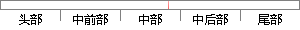

本系统采用比较简单的固定分区法来实现内存的管理。
片段位置图

相似结果
相似片段： [模拟固定分区存储管理的分配与回收.rar] - 模拟...程序,采用首次适应算法和最佳适应算法实现动态分区。...链来管理,在进行内存分配时,系统优先使用空闲区低端...
| 标题 | 《操作系统--内存分配 本文件为模拟 的 Windows Develop 182万源...》 |
| 对比库 | PaperRater云论文库 |
| 网址 | http://www.pudn.com/downloads11/sourcecode/windows/detail47596.html |
| 相似率 | 63.16% （轻度抄袭） |
※ 片段修改建议 ※
近似词参考：- 管理：办理 经管 治理
- 固定：牢固
- 采用：采取 接纳 采纳
系统自动生成语句： 本系统采取比较简单的牢固分区法来实现内存的办理。
注：本片段修改建议为系统自动生成，仅供参考。